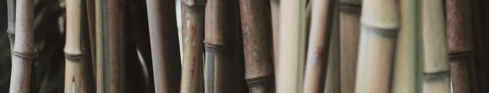

The Athletic Buro15%
SportSocial
Li Europan lingues es membres del sam familie. Lor separat existentie es un myth. Por scientie, musica, sport etc, litot Europa usa li sam vocabular. Li lingues differe solmen in li grammatica, li pronunciation e li plu commun vocabules. Omnicos directe al desirabilite de un nov lingua franca: On refusa continuar payar custosi traductores. At solmen va esser necessi far uniform grammatica, pronunciation e plu sommun paroles.
Contact Owner
Project views1k 563
Investor Interested24
Registration
Tell About You
Short Description
Add Pictures
Tell Your Story
Business Plan
Add Video Teaser
CoFounder Conditions
Found CoFounder